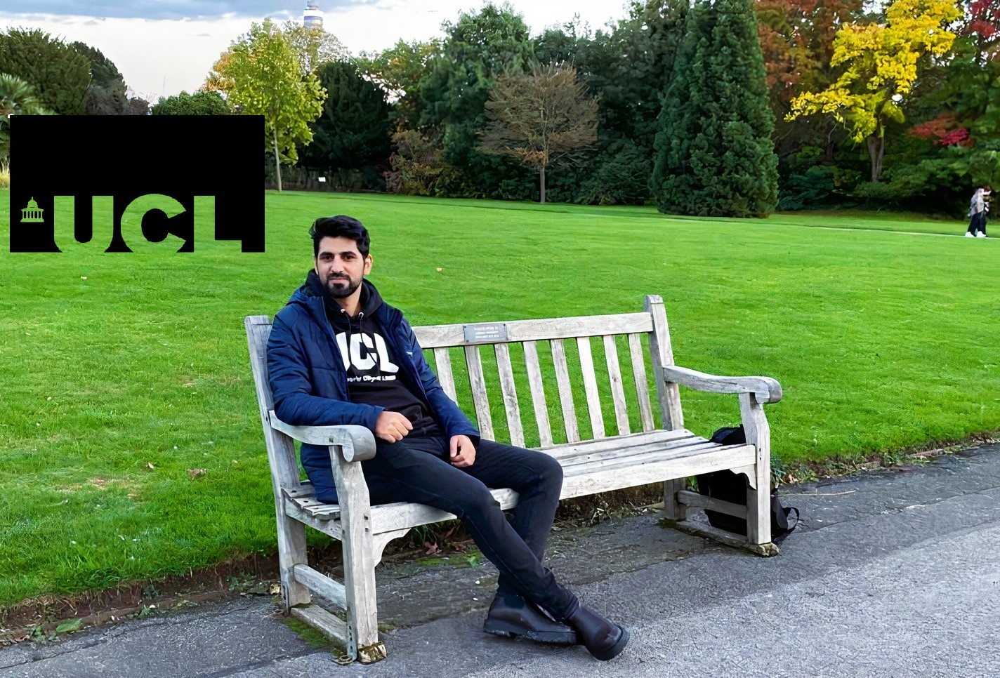
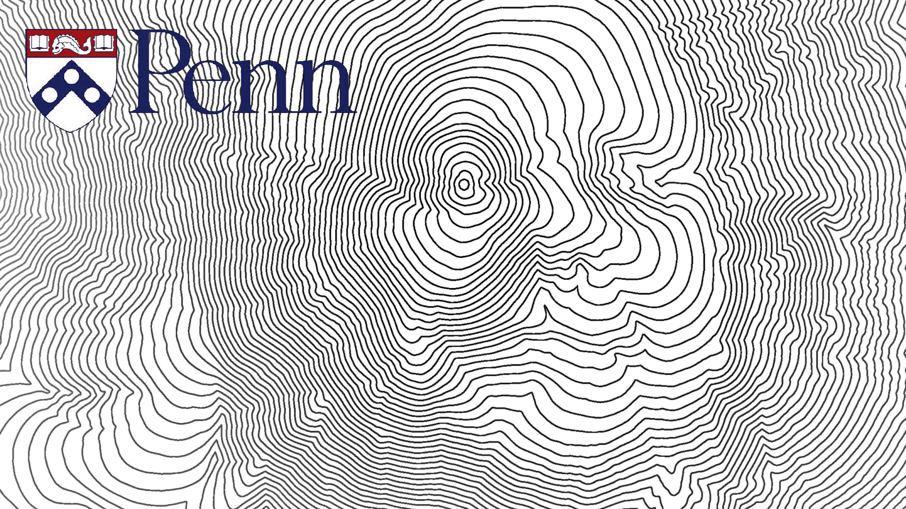

First Kashmiri Admitted to the Spatial Science Program at World’s Top-Ranked Built Environment University (UCL)"
Burhan Ahmad Wani has become the first Kashmiri to be admitted to the Spatial Science Programme at University College London (UCL), UK, ranked #1 in the world. This achievement marks a significant milestone in his journey to advance sustainable urban development through innovative spatial analysis and planning.

Remembering Ken Steif: A Leader in Urban Analytics (UPenn)"
Prof. Ken Steif, the Director of University of Pennsylvania's Weitzman School of Design, was the person who inspired me to begin my journey in Urban Spatial Science. I was admitted to the Master of Urban Spatial Analytics program at the University of Pennsylvania, but before I could meet my mentor, he sadly passed away after a long battle with cancer at the young age of 38. I eventually chose to continue my spatial science adventure at UCL, carrying forward the spirit of his work.